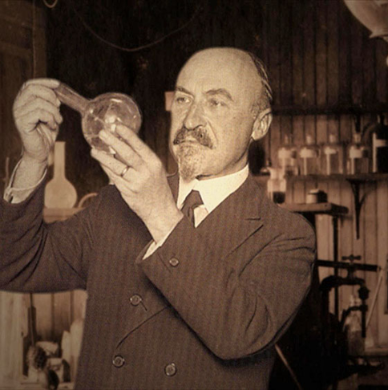

Descoperirea plasticului
Acum un secol, în Statele Unite, belgianul Leo Baekeland punea la punct un material care avea să revoluţioneze piaţa de consum: banalul material plastic, care a început să fie folosit pentru producerea celor mai diverse obiecte.

Astăzi,după ce s-a constatat că Pământul nu mai poate respira din cauza deşeurilor din plastic, acesta a început să fie înlocuit cu materiale mai prietenoase cu mediul înconjurător, adică biodegradabile.